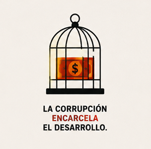
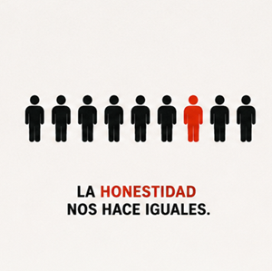
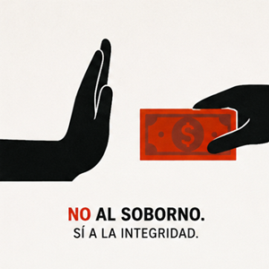

La corrupción es un fenómeno social, político y económico que consiste en el uso indebido del poder o de una posición de autoridad para obtener beneficios personales o para favorecer a terceros. Aunque puede presentarse en cualquier ámbito, suele ser más visible en instituciones públicas donde se administran recursos que pertenecen a toda la sociedad.
Existen diversos factores que favorecen la aparición y expansión de la corrupción. Uno de los más importantes es la debilidad institucional. Cuando los organismos encargados de supervisar y controlar las acciones de los funcionarios no cuentan con independencia, recursos o capacidad suficiente, resulta más fácil que ocurran actos corruptos sin ser detectados. Asimismo, la falta de transparencia en la administración pública dificulta que los ciudadanos conozcan cómo se utilizan los recursos del Estado, lo que crea oportunidades para el abuso de poder.

La corrupción afecta gravemente el desarrollo de un país. En el aspecto económico, provoca el desperdicio o desvío de recursos que deberían destinarse a servicios públicos como educación, salud e infraestructura. También reduce la confianza de los inversionistas y limita el crecimiento económico. En el ámbito social, aumenta la desigualdad y perjudica especialmente a las personas más vulnerables, quienes dependen de los servicios públicos para mejorar su calidad de vida.

Entre las principales problemáticas de la corrupción se encuentran la pérdida de confianza en las instituciones, el debilitamiento de la democracia y el aumento de la impunidad. Para combatir este problema es necesario fortalecer los organismos de control, promover la transparencia en el uso de los recursos públicos y aplicar sanciones a quienes cometan actos corruptos. Asimismo, la educación en valores como la honestidad y la responsabilidad ayuda a prevenir estas conductas desde edades tempranas.